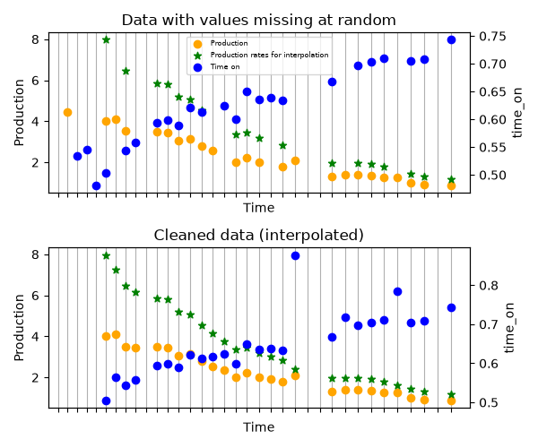

Note
Go to the end to download the full example code.
Data cleaning
Shows how data can be cleaned before creating a Well.

import matplotlib.pyplot as plt
import numpy as np
import scipy as sp
from dca.adca.utils import clean_well_data
from dca.decline_curve_analysis import Exponential
rng = np.random.default_rng(42)
n = 35
# Create time_on
noise = rng.normal(loc=0.5, scale=0.1, size=n)
time_on = sp.special.expit(np.linspace(-0.5, 0.5, num=n) + noise)
# time_on = np.ones_like(time_on)
cumulative_time_on = np.cumsum(time_on)
midpoints = cumulative_time_on - time_on / 2
# Create production within each time period
curve = Exponential.from_original_parametrization(C=10, k=0.1)
production = curve.eval(midpoints) * time_on
noise = rng.normal(scale=0.1, size=n)
production = np.exp(np.log(production) + np.sqrt(time_on) * noise)
# Create time
time = midpoints
# Add noise
idx_time_on = rng.choice(np.arange(n), size=n // 3, replace=False)
time_on[idx_time_on] = np.nan
idx_production = rng.choice(np.arange(n), size=n // 3, replace=False)
production[idx_production] = np.nan
# Clean data
cleaned = clean_well_data(production=production, time=time, time_on=time_on)
fig, (ax1, ax2) = plt.subplots(2, 1, figsize=(6, 5), sharex=True, sharey=True)
ax1.set_title("Data with values missing at random")
ax1.set_xlabel("Time")
ax1.set_ylabel("Production")
ax1.scatter(time, production, color="orange", label="Production", zorder=4)
ax11 = ax1.twinx()
ax11.set_ylabel("time_on")
ax11.scatter(time, time_on, color="blue", label="Time on", zorder=6)
ax11.tick_params(axis="y")
ax1.grid(True, axis="x", which="both", zorder=0)
ax1.set_xticks(time)
ax1.scatter(
time,
production / time_on,
color="green",
zorder=8,
label="Production rates for interpolation",
marker="*",
)
lines, labels = ax1.get_legend_handles_labels()
lines2, labels2 = ax11.get_legend_handles_labels()
ax1.legend(lines + lines2, labels + labels2, loc="upper center", fontsize=6)
ax2.set_title("Cleaned data (interpolated)")
ax2.set_xlabel("Time")
ax2.set_ylabel("Production")
ax2.scatter(cleaned.time, cleaned.production, color="orange", zorder=4)
ax22 = ax2.twinx()
ax22.set_ylabel("time_on")
ax22.scatter(cleaned.time, cleaned.time_on, color="blue", zorder=6)
ax22.tick_params(axis="y")
ax2.grid(True, axis="x", which="both", zorder=0)
ax2.set_xticks(time)
ax2.scatter(
cleaned.time,
cleaned.production / cleaned.time_on,
color="green",
zorder=8,
label="Production rates after interpolation",
marker="*",
)
ax2.set_xticklabels([])
fig.tight_layout() # otherwise the right y-label is slightly clipped
plt.show()
Total running time of the script: (0 minutes 0.306 seconds)